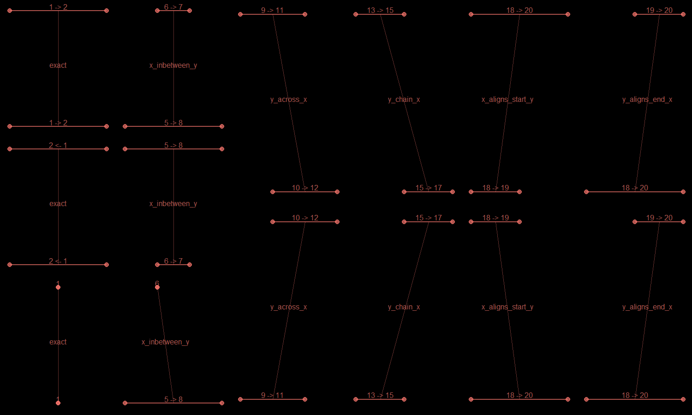

A number_line object is a range of numeric values. number_line objects as based off interval objects from the lubridate package but supports any object that can be successfully coerced to a numeric object.
For a given number_line object e.g. 8 <- 1, its main components are;
left_point() - left side of the number_line i.e. 8
right_point() - right side of the number_line i.e. 1
start_point() - lower end of the range i.e. 1
end_point() - upper end of the range i.e. 8
direction - "decreasing" (<-), "increasing" (->) or no direction (==)
number_line_width() - difference between the left and right points i.e. -7
For an "increasing" number_line, its start_point() is at the left_point(). In contrast, the start_point() of a "decreasing" number_line is at the right_point().
library(diyar) # `number_line` objects nl_a <- number_line(l = c(3, 5), r = c(4, 1)) nl_a #> [1] "3 -> 4" "5 <- 1" # Lower end of the range start_point(nl_a) #> [1] 3 1 # Left part of the range left_point(nl_a) #> [1] 3 5
number_line
There are convenience functions to reverse, shrink, expand or shift a number_line along the number line.
nl_c <- number_line(as.Date("04/04/2019", "%d/%M/%Y"), as.Date("07/04/2019", "%d/%M/%Y")) nl_c #> [1] "2019-04-04 -> 2019-04-07" # Expand the `number_line` by 2 days from both ends nl_d <- expand_number_line(nl_c, 2); nl_d #> [1] "2019-04-02 -> 2019-04-09" # Expand the `number_line` by 2 days from the lower end only nl_e <- expand_number_line(nl_c, 2, "start"); nl_e #> [1] "2019-04-02 -> 2019-04-07" # Shrink the `number_line` by 2 days from the upper end only nl_f <- expand_number_line(nl_c, -2, "end"); nl_f #> [1] "2019-04-04 -> 2019-04-05" # Shrink the `number_line` by 2 days from both ends nl_g <- expand_number_line(nl_c, -2); nl_g #> [1] "2019-04-06 <- 2019-04-05" # Reverse the direction of the `number_line` nl_h <- reverse_number_line(nl_c); nl_h #> [1] "2019-04-07 <- 2019-04-04" # Shift the `number_line` towards the negative end of the number line by 2 days nl_i <- shift_number_line(nl_c, -2); nl_i #> [1] "2019-04-02 -> 2019-04-05" # Shift the `number_line` towards the positive end of the number line by 2 days nl_j <- shift_number_line(nl_c, 2); nl_j #> [1] "2019-04-06 -> 2019-04-09" # Change the left part of the `number_line` to a negative value nl_k <- invert_number_line(nl_c, "left"); nl_k #> [1] "-17990 -> 17993" # Split a `number_line` nl_l <- seq(nl_c, length.out = 3); nl_l #> [1] "2019-04-04 -> 2019-04-05" "2019-04-05 -> 2019-04-06" #> [3] "2019-04-06 -> 2019-04-07"
number_line objects can overlap with each other. diyar recognises seven ways this can happen. These are exact(), reverse(), inbetween(), across(), chain(), aligns_start() and aligns_end(). The 7 methods are mutually exclusive. There are 2 convenience methods - "none" and overlap(), which are mutually inclusive with the other 7. See Figure 1.
Figure 1: Overlap methods for number_line 
nl_1 <- c(number_line(1, 5), number_line(1, 5), number_line(5, 9)) nl_2 <- c(number_line(1, 2), number_line(2, 7), number_line(0, 6)) # Union nl_1; nl_2; union_number_lines(nl_1, nl_2) #> [1] "1 -> 5" "1 -> 5" "5 -> 9" #> [1] "1 -> 2" "2 -> 7" "0 -> 6" #> [1] "1 -> 5" "1 -> 7" "0 -> 9" nl_3 <- number_line(as.Date(c("01/01/2020", "03/01/2020","09/01/2020"), "%d/%m/%Y"), as.Date(c("09/01/2020", "09/01/2020","25/12/2020"), "%d/%m/%Y")) nl_4 <- number_line(as.Date(c("04/01/2020","01/01/2020","01/01/2020"), "%d/%m/%Y"), as.Date(c("05/01/2020","05/01/2020","03/01/2020"), "%d/%m/%Y")) # Intersect nl_3; nl_4; intersect_number_lines(nl_3, nl_4) #> [1] "2020-01-01 -> 2020-01-09" "2020-01-03 -> 2020-01-09" #> [3] "2020-01-09 -> 2020-12-25" #> [1] "2020-01-04 -> 2020-01-05" "2020-01-01 -> 2020-01-05" #> [3] "2020-01-01 -> 2020-01-03" #> [1] "2020-01-04 -> 2020-01-05" "2020-01-03 -> 2020-01-05" #> [3] "NA ?? NA" # Subtract nl_3; nl_4; subtract_number_lines(nl_3, nl_4) #> [1] "2020-01-01 -> 2020-01-09" "2020-01-03 -> 2020-01-09" #> [3] "2020-01-09 -> 2020-12-25" #> [1] "2020-01-04 -> 2020-01-05" "2020-01-01 -> 2020-01-05" #> [3] "2020-01-01 -> 2020-01-03" #> $n1 #> [1] "2020-01-01 -> 2020-01-04" "2020-01-01 -> 2020-01-03" #> [3] "NA ?? NA" #> #> $n2 #> [1] "2020-01-05 -> 2020-01-09" "2020-01-05 -> 2020-01-09" #> [3] "NA ?? NA"